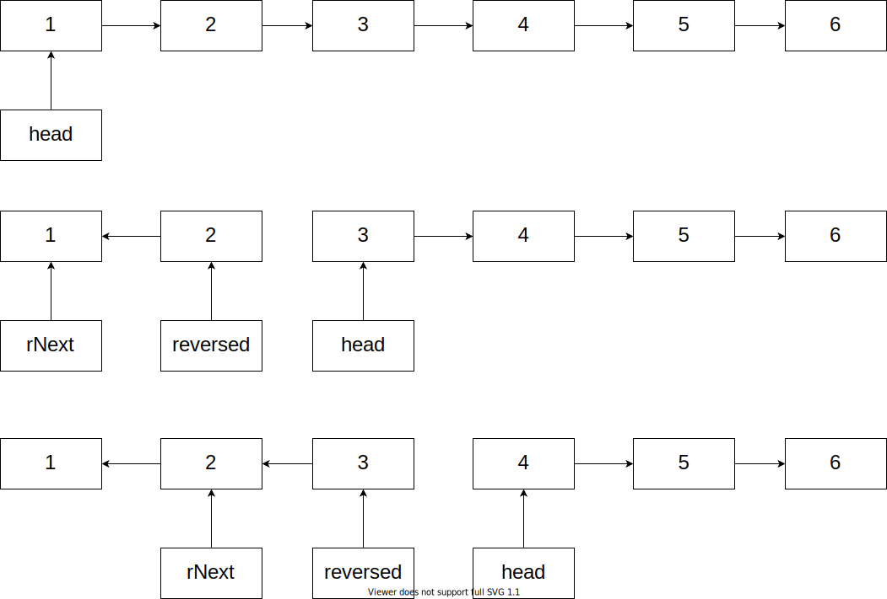

好久不刷题，还得捡起来。
太久不刷，不好一来就选太难。好奇 LeetCode 中国有啥区别，逛了一下，刚好发现置顶推荐 25 号题，选择困难症表示就它了。（不过考虑到翻译和讨论质量，还是刷 LeetCode 原版，最多两边都提交一下。）
题目在此：https://leetcode.com/problems/reverse-nodes-in-k-group/
题目
一句话题意：给定链表 和数字 k，把链表按照每 k 个节点一组，组内原地倒序；最后不满 k 个的剩余元素保留原样。
例子：
1->2->3->4->5
k = 2 时，返回 2->1->4->3->5
k = 3 时，返回 3->2->1->4->5
约束：
- 只能使用常数规模的额外内存
- 不能修改节点的值，而要动链表的结构
题目只需要实现给定签名的 reverseKGroup(head *ListNode, k int) 函数，不需要写完整的程序。
就是考察链表基本操作的题目，这样的题目居然也标 Hard？
水题一道，为了避免浪费读者时间，刷题老手可以关闭了 。新手可以参考一下我的解题流程和切入思路，毕竟没有难点可说。
过程
测试驱动
题目虽然简单，但链表操作还是比较违反直觉的。
『七加减二』法则说，人只能在短时记忆里同时处理 5 到 9 个内容。而最新的研究表明，实际上人类的平均值更低，大约只有 4。（你知道为什么一般记数字都是 4 个一组记了吧）
如果光凭想象，多数没有经过特殊训练的人，很快就不记得哪个节点指向哪个了。所以开始前对于新手有两个建议：
- 拿好纸和笔，没有把握的内容，写下来推算
- 写实现之前，先写测试
事实上，这两个建议对实际的软件开发也是适用的。很多时候，大家信心满满，觉得这么点事情，拿纸笔和写测试的时间是浪费。可很快就会发现，节省的时间跟陷入莫名错误时调试耗的心力和时间比，根本不算什么。正所谓『磨刀不误砍柴工』。
第二个建议，如果按规范执行，就是所谓的 TDD （测试驱动开发）。这里不展开，不知道的自己查一下。最近一直在用 Go，刷题也是。借助 Go 自带的测试框架，很快就可以写出这样的单元测试代码：
|
|
不要看着这些代码很长，写多了都是套路，部分代码还能工具生成（这里用的 VS Code + 插件），耗费的注意力是很少的。而一旦测试用例写完，我们就有了一个清晰的目标：通过修改实现，让测试通过。每次验证的成本为 0。
倒序
解决任何问题，首先要懂得分解问题。如果问题看起来有点复杂，尝试分解成几个子问题去解决。如果还是棘手，就继续分解，直到比较容易解决为止。怎样的问题算复杂，因人而异。有些问题很难，解决多了有了固定解法，也可以直接写答案；新手生疏，就多分解细一些。
这里先忽略 k，先考虑整个链表原地倒序。
所谓倒序，对于单向链表而言，就是 前一个节点 和 后继 节点反过来。
1->2->3->4->5 ==> 1<-2<-3<-4<-5 （为了强调修改结构而不是节点，特意不动节点位置，而修改指针指向。）
很容易想到，可以新建一个链表，将原链表的节点，从尾部逐个放到新链表。
|
|
用了四个指针，分别指向两条链表的头和尾。跑一下单元测试，当然是失败的，但可以看到，输出整体倒序了。
不过，这个实现，效率太差。链表是无法随机访问的，光访问尾节点，就得耗费 $ O(N) $ 复杂度，每次访问尾节点都从头开始查找，整体的复杂度就变成 $ O(N^2) $ 了。其实，倒序链没有必要非要从头部开始构建。原链只能从头开始读，那么倒序链就从尾部开始构建，就可以遍历一遍完成倒序。
|
|
这种实现不仅只需要遍历一次，连指针都少用了一个。解释起来比较麻烦，直接画图反而直观：

每次从原链表取头节点，放到倒序链表做头节点，三个额外的指针一路向后移动。遍历完成，转换也完成了。对链表稍熟练一点，应该直接想到这种做法。前面第一版实际上是写文章时临时写出来做对比的。
分组断开与重组
最基本的倒序解决了。不过实际上要解决的，是把原链表分成多个 k 大小的子链表，每条子链表内部倒序。把上面实现的函数，重命名为 func reverseSubGroup(head *ListNode) *ListNode ，用来给每个子链表倒序时调用。参数 k 去掉，用不上。原来函数，变成解决两个问题：把原链表分割后交给倒序函数；把倒序后的链表重新拼成完整的链表。
|
|
遍历逻辑跟前面很接近，差别是这里不需要倒序，只是 Group 的断开和重连。重点都用注释标注了。
再跑一次单元测试，OK 了。提交一下，AC，时间 4ms（打败 97.84%），内存 3.6 MB（打败 50%）。
外层函数也是只遍历了一遍，时间复杂度 $ O(N) $ （机械地从有多少层循环得出 $ O(N^2) $ 乃至 $ O(N^3) $ 的醒醒），空间复杂度也满足常数阶。如果不追求极限优化，特别是考虑到代码的可读性，我觉得可以接受了。
一些要点
理解链表不能随机访问，只能从头节点开始遍历的特点，尽量用几个指针，在一次遍历里尽量多地获取稍后需要用到的节点。
多个指针一起移动时，需要小心处理赋值顺序，避免拿到错误的值。一般马上要断开的指针（修改成指向别的节点），需要先用另一个指针备份避免『失联』。
我看到讨论区里有人用栈来实现，还通过了。需要指出，这是 不符合题目要求的。
题目要求额外的内存是常数。而一旦使用了栈来储存节点，栈的大小就是与 k 相关的了。k 作为一个输入，是无法控制其大小的。在实际生产环境，这会成为性能隐患。而刷题的角度说，题目既然给定了约束，这种做法直接是不符合题意。居然能通过，说明这道题的测试用例太弱了。
总的来说，这道题作为新手熟悉 链表操作 的题目，值得一做。但也就这样了，我故意多写一种倒序的『初级思路』，把过程掰碎了说，也只能写到这么点内容。
你觉得我讲得怎样？关键点说明白了吗？有讲到你疑惑的点，还是废话连篇？欢迎留言告诉我。
题外话：什么是 ARTS
ARTS 是由陈皓（左耳朵耗子）发起的一个活动，每周坚持做四件事，具体内容如下
- Algorithm：至少做一道 leetcode 的算法题
- Review：阅读并点评至少一篇英文技术文章
- Tip：学习至少一个技术技巧
- Share：分享一篇有观点和思考的技术文章
耗子叔说『只要坚持每天学习 1 小时，就超过了 99% 的人』（大意）。
我印象中很早就见过。当时不知道是忙还是别的原因，居然没有想到一起打卡。
儿子出生后，压力更大更忙了。可我反而意识到，需要做的事，迟早都得做，一个都逃不掉。年轻的时候会说『等 xxx 的时候』，现在越来越明白，那个时候可能永远等不到，如果现在不做，等到什么时候？
早年也零星刷过题，不过一般在 POJ，然后是 URAL，再后来为了方便，就泡在 Virtual Judge。在三星当算法讲师时最爽，能够带薪刷题，还自己出题构造测试用例；但是投入太多，开发业务却又落下。离开三星那个氛围，专注技术转型之后，刷题又落下了。现在重新捡起，选择了业界一致选择的 LeetCode，然后顺便开启 ARTS 的打卡。

本文为本人原创，采用知识共享 “署名-非商业性使用-相同方式共享” 4.0 (CC BY-NC-SA 4.0)”许可协议进行许可。
本作品可自由复制、传播及基于本作品进行演绎创作。如有以上需要，请留言告知，在文章开头明显位置加上署名（Jayce Chant）、原链接及许可协议信息，并明确指出修改（如有），不得用于商业用途。谢谢合作。
请点击查看协议的中文摘要。